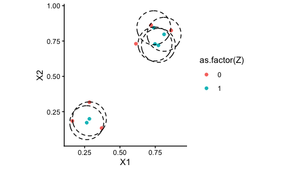

This package implements the Caliper Synthetic Matching approach, which is a blend of radius matching using distance metrics put on the covariate distribution itself, and the synthetic control method. In particular, it identifies sets of units local to each treated unit in turn, and then makes a synthetic control for each treated unit using those local units.
Details can be found on the paper: Che et. al. (2026), Caliper Synthetic Matching. This paper was recently accepted at Political Analyis.
The GitHub repo has replication materials for the associated paper in the scripts directory; see below for further discussion of this added-on code. The installed package will ignore scripts. We also provide online documentation for the package on the GitHub site.
Installation
You can install the development version of CSMatch from GitHub with:
Quick demo of package
Below we show a quick walk-through of some of the methods of the package. Also see our vignette that does a more careful sample data analysis of the Lalonde dataset, based off the primary paper noted above.
To illustrate the package, we first generate a small toy dataset to illustrate the main methods of interest (we use a data generator that we used in our simulation studies):
set.seed( 404454440 )
dat <- gen_one_toy(nt = 6, nc=100)
names( dat )
#> [1] "X1" "X2" "Z" "noise" "Y0_denoised"
#> [6] "Y0" "Y1_denoised" "Y1" "Y" "Y_denoised"
#> [11] "id"
ggplot( dat, aes( X1, X2, color = as.factor(Z) ) ) + geom_point() +
coord_fixed()
To calculate matches, call get_cal_matches()–it will match, make synthetic controls for each unit, and give you a final dataset back, stored as an csm_matches object:
mtch <- get_cal_matches( dat,
form = Z ~ X1 + X2,
metric = "euclidean",
scaling = c( 1/0.2, 1/0.2 ),
caliper = 0.6,
rad_method = "adaptive",
est_method = "csm" )
mtch
#> csm_matches: matching with "euclidean" distance and "adaptive" radii
#> aggregating sets with "csm" method
#> match covariates: X1, X2
#> 6 treated units matched to 8 of 100 control units
#> (0 exact matches, 4 below caliper, 2 above caliper)
#> Adaptive calipers: 0.6, 0.6, 0.6, 0.676, 0.6, ...
#> Target caliper = 0.6
#> Max distance ranges 0.132 - 0.693
#> scaling: 5, 5See the vignette for discussion on how to select scaling and calipers.
There are a variety of things you can pull from the result. First, you can get a list of statistics on the treated units such as the number of control units they were matched to:
mtch$treatment_table
#> # A tibble: 6 × 9
#> id subclass nc ess min_dist max_dist adacal feasible matched
#> <chr> <chr> <dbl> <dbl> <dbl> <dbl> <dbl> <dbl> <dbl>
#> 1 1 1 2 2.00 0.514 0.565 0.6 1 1
#> 2 2 2 2 2.00 0.547 0.587 0.6 1 1
#> 3 3 3 4 1.67 0.283 0.562 0.6 1 1
#> 4 4 4 1 1 0.676 0.676 0.676 0 1
#> 5 5 5 1 1 0.132 0.132 0.6 1 1
#> 6 6 6 1 1 0.693 0.693 0.693 0 1You can see all the units used, grouped by each little matched set corresponding to each treated unit:
rt <- result_table(mtch, nonzero_weight_only = TRUE ) You can even plot those units!
ggplot( rt, aes( X1, X2, col=as.factor(Z) ) ) +
geom_point() +
ggforce::geom_circle(
data = filter(rt, Z == 1),
aes(x0 = X1, y0 = X2, r = 0.6*0.2),
inherit.aes = FALSE,
color = "black",
linetype = "dashed",
alpha = 0.6
) +
coord_fixed()
You can filter to only matches within the initial caliper:
rt_feas <- result_table( mtch, feasible_only = TRUE )You can also get the final generated result as a data.frame by casting the result into a dataframe:
head( as.data.frame( mtch ), n = 4 )
#> # A tibble: 4 × 15
#> id X1 X2 Z noise Y0_denoised Y0 Y1_denoised Y1 Y
#> <chr> <dbl> <dbl> <dbl> <dbl> <dbl> <dbl> <dbl> <dbl> <dbl>
#> 1 1 0.265 0.172 1 -0.402 5.02 4.62 6.33 5.93 5.93
#> 2 75 0.371 0.134 0 0.842 4.78 5.62 6.29 7.13 5.62
#> 3 94 0.163 0.184 0 -0.515 5.00 4.48 6.04 5.52 4.48
#> 4 2 0.284 0.199 1 0.373 5.07 5.44 6.51 6.89 6.89
#> # ℹ 5 more variables: Y_denoised <dbl>, dist <dbl>, subclass <chr>, unit <chr>,
#> # weights <dbl>Finally, you can estimate impacts on the matched dataset using whatever tools you want. The option discussed in our paper is implemented as so:
estimate_ATT( mtch )
#> # A tibble: 1 × 12
#> ATT SE N_T N_C ESS_C sigma_hat V_E p_drop S0_sq S1_sq cov_w_s t
#> <dbl> <dbl> <int> <int> <dbl> <dbl> <dbl> <dbl> <dbl> <dbl> <dbl> <dbl>
#> 1 3.28 0.424 6 6 5.07 NA 0.180 0.5 0.280 0.750 -0.0272 7.73Notes on Dependencies
This package has some tricky dependencies if you are using the simulation methods. In particular, it (optionally) uses a DGP (for simulation) from ACIC 2016. You have to install it first from GitHub:
You should not need this package unless you are generating the ACIC synthetic data.